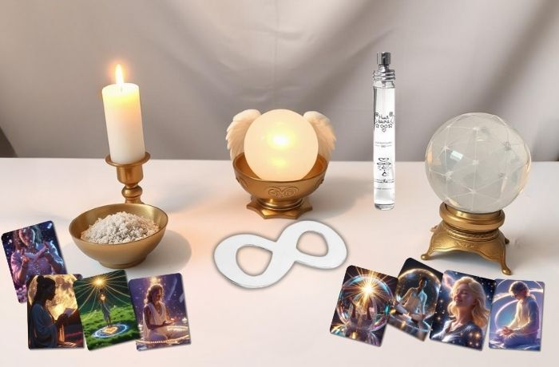

Bienvenue dans
l’Oracle Huit Sacré
Ce merveilleux oracle a été créé pour t’aider à prendre soin de ton énergie, à te purifier, à te protéger et à avancer sur ton chemin spirituel.
Chaque carte propose une intention et une action concrète à réaliser facilement chez toi ou dans ton quotidien. Utilise-les chaque jour ou chaque fois que tu en ressens le besoin, pour cultiver la lumière, la paix et la confiance en toi.
Comment utiliser l'oracle
-
Prépare toi
Trouve un endroit calme et agréable. Prends quelques respirations profondes pour te recentrer et te connecter à ton énergie intérieure. -
Tire une carte
Ferme les yeux, demande à l’univers ou à tes guides de te guider, puis tire une carte au hasard. Tu peux aussi laisser ton intuition te guider vers celle qui t’appelle le plus et clique sur la carte. -
Lis l’intention et l’action
Suis les instructions pour effectuer le rituel, la méditation ou l’action suggérée. Prends le temps nécessaire, sans précipitation, pour vivre pleinement le moment.
-
Réalise le rituel ou l’action
Trouve un endroit calme et agréable. Prends quelques respirations profondes pour te recentrer et te connecter à ton énergie intérieure. -
Note tes ressentis
Après le rituel, note dans ton journal ou ton agenda (je te conseils l’Agenda Spirits 2026) ce que tu as ressenti, les messages ou synchronicités que tu as remarqués. Cela t’aidera à suivre ton cheminement spirituel et à voir les évolutions dans ta vie.
Outils recommandés
Pour réaliser les protocoles proposés sur les cartes, tu peux utiliser :
- Bougies blanches
- Encens ou sauge blanche et une tresse de foin ou autres cristaux et pierres
- Huit sacré afin d’amplifier le rituel Cliquez ici
- Sel
- Eau
- Huiles essentielles
- Parfum Huit Sacré Cliquez ici
- Feuille ou carnet ou journal et un stylo ou Agenda Spirits
- Bol ou sachet